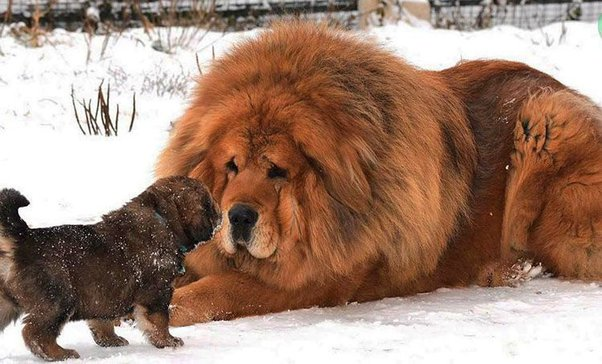

Razas Grandes
Los perros de razas gigantes pueden resultar intimidantes. Pero si se les entrena adecuadamente serán
unos grandes compañeros y protegerán fielmente a los miembros de su manada
Aunque cada raza es diferente, es frecuente que los perros de gran tamaño sean más tranquilos que los pequeños.
Su esperanza de vida suele ser más corta que la de otras razas de menor tamaño.
Algunas razas y sus caracteristicas:
-
Gran Danés

- Esperanza de vida: 8-10 años
- Altura:80 cm o mas
- Peso: 45-100 kg
- Su cabeza es alargada y delgada,
pero no puntiaguda.Su hocico es profundo
y rectangular.Sus orejas son de inserción
caídas y de tamaño mediano.
Es muy grande,poderoso y elegante
-
Dogo Tibetano
- Esperanza de vida: 12-14 años
- Altura:70-80 cm
- Peso:45-100 kg
- Es una de las razas orientales más antiguas que existen
Su cabeza es ancha, pesada y fuerte con creaneo redondeado
Es un perro fuerte y poderoso,de tamaño gigante,muy robusto e imponente.